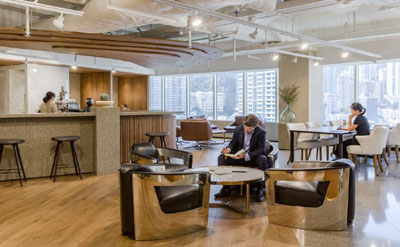

Hosting meetings and events in a post-COVID-19 world will require major adjusting — especially on the part of planners and venues. It’ll take a combined effort in order to restart the industry and begin hosting in-person functions again. Venues can focus on a few key areas in order to provide the requirements for safe meetings and events: health and safety protocols, social distancing arrangements, and safe food and beverage.
| Social Distancing and Work |
Venues play a key role in the recovery of the events industry. By implementing distancing practices at your property and taking every precaution, it lowers the risk for the event planner and adds a layer of security.
It will become an expected norm for venues to be equipped with thermal scanning, as this is a must-have layer of security for those willing to attend the event. Not having this capability will add an element of risk for attendees. Thermal scanning can at least give an indication of who is showing symptoms and can be immediately quarantined. While there are doubts about the effectiveness of thermal scanning in preventing the spread of the virus, it will still be a security measure expected by planners and attendees. Venues that can provide this service will put themselves ahead of the pack.
Having a sanitation policy in place is another crucial element for any event venue looking to restart its group business and prepare for future events. Have a plan ready for handling those who may contract the virus at your hotel or while attending an event at your hotel. The United States government recently released guidelines – “Opening Up America Again” – that give general principles applicable to all future phases of business recovery. These few are directly relevant to events:
The meetings that will take place in person will need to have a very strong reason to happen. They will likely be limited to domestic events and have virtual alternatives as a replacement until there is a vaccine or other cure. Small, local safe meetings will be the way the event industry rebuilds and makes its comeback: Internal meetings, small workshops, and seminars, held locally with attendees from the near vicinity and the same geographic area. The meetings will also likely be short meetings, as prolonged, close contact is thought to further spread the virus.
|  |
| Flexible workspace will help things get back to normal |
This is still a topic under discussion within the industry, but social distancing will likely affect future meetings in many ways – one of the most notable being room and seating configuration. Professional Convention Management Association (PCMA) recently posted a discussion about how to manage social distancing at future events, and a few of the participants had suggestions for how they plan to tackle this challenge when it comes to room setup.
Kelsey Schmidt, senior manager of event panning at Law School Admission Council, says her team is planning to keep tables six feet apart and create 12-foot aisles. They’ve also considered putting tape marks on the carpet to indicate how far apart people standing in line should be from each other.
Jennifer Stewart of International Association of Chiefs of Police shared her team’s brainstorming ideas for educational session rooms and theater-style seating. She's hopeful that by October, they will be able to set up small groups of chairs near one another while still accommodating the social distancing recommendations. For example, setting up columns of two chairs each with six-foot aisles in between, and having increased distance between chair rows – which is essentially theater setup with an increased number of aisles.For registration lines, hotels could follow models of what grocery stores are doing, with taped lines on the floor to demarcate six-foot distances. Brainstorm possible event room layouts and design a way for people to get to their seats while maintaining the distance limit.
Wynn Las Vegas recently unveiled its Health and Sanitation Program, which includes a number of steps it plans to take in order to ensure that recovery is undertaken in a safe and responsible way. These include physical distancing measures, thermal cameras at entry points, a cap on gathering size and occupancy in retail and other areas, and mandatory mask wearing. It also indicates separate instructions for different aspects of the hotel’s operations including training for employees, cleaning protocols and access to PPE, and a new flow for processing guests, as well as specific sanitation policies for each staff department. Wynn’s reopening strategy and safety precautions could serve as a blueprint for other major hotels and meeting facilities as we move toward restarting group business.
Most importantly, when it comes to hosting safe meetings and events at your hotel or venue, be sure to stay in touch with all local, state and federal guidelines. You can then use event diagramming tools to ensure you adhere to those guidelines, so you can deliver safe experiences for all attendees and hotel employees.
When it comes to F&B at events, self-service buffets likely won’t be a viable option for a while. Seated dining could be an alternative option, if there are available staff members trained in sanitation and food-handling measures. These extra steps and layers of caution could tack on added costs to F&B, so it’s in venues’ best interest to offer cost-effective solutions for food and beverage at events. One option could be pre-packed meals that attendees pick up from fridges or multiple locations, or have the boxed meals already placed at their seats at the event.
For any on-campus events, Harvard University’s guidelines limit them to ten people and urge the use of a room or event space large enough to prevent crowding for the expected attendance. The guidelines around food and beverage recommend staggering stations and serving food in individual units like bagged lunches, individual water bottles, etc. Avoid serving foods where multiple hands will touch the food, like bowls of chips. Provide serving utensils if needed or arrange for food to be served by staff who are trained in safe food handling.
Bo Peabody, co-owner of Mezze Restaurant Group, outlined a few precautions for restaurants during this time that can also be applied to food and beverage spaces for meetings and events. He suggests going beyond spacing out tables and taking advantage of any outdoor space if you have it available – especially as we’re moving into the warmer months. Provide an open-air environment if possible, or make sure the room has airflow – open windows or keep a door cracked open so people don’t feel confined and the room gets fresh air.
The Pennsylvania Department of Agriculture distributed guidelines for food pantries, and a few are also applicable to hotels and venues that provide food and beverage:
Consider keeping the amount of food on display low and restock more frequently to reduce the amount of food touched by different clients. Instead of making food available for clients to browse, consider a menu-only option and have staff pre-pack the meal bags or boxes. Restrict the number of people in the kitchen space to encourage social distancing and limit the number of people handling food. Temporarily postpone any food demos or cooking classes and don’t offer food samples. Webinar – The Cvent Source: Group Business Insights On Friday, April 17, we hosted the first of a monthly series of webinars dedicated to providing insights – just like the ones above – on the group business landscape as you plan for a rebound to your meetings and events business.
The webinars are based on proprietary data from the Cvent Supplier Network (CSN), overall meetings and events trends, and observations from proven third-party experts in the hospitality space. We discussed:
| Home | Index |